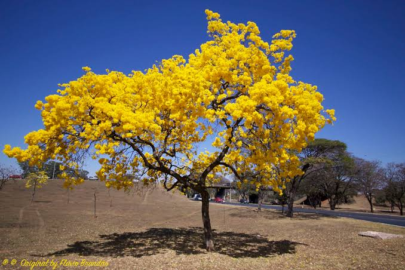

Em sua flora, o Pantanal possui raras espécies exclusivas, mas mesmo assim, são catalogadas 3500 espécies de plantas terrestres e aquáticas, tornando o Pantanal um dos locais com maior diversidade vegetal do mundo. Ele contém plantas das regiões da Floresta Amazônica, Cerrado, Caatinga, Mata Atlântica e Chaco (paraguaio, argentino e boliviano). Uma de suas maiores características é sua vegetação aberta, diferente de outros biomas como mata atlântica e floresta amazônica que são fechados, há também o fato de sua vegetação variar de acordo com seu relevo, como por exemplo em suas regiões mais baixas que sofrem de alagamento tem a vegetação de gramínea e de plantas aquáticas.
Conhecida também como jacinto-de-água, é uma planta aquática bastante encontrada nos rios do Pantanal. Suas folhas tem um verde vivo e suas flores tons de azul, anil e violeta. Obtém uma ótima utilidade para a limpeza da agua removendo poluentes da mesma, mas mesmo assim precisa de constante monitoramento, pois por conta de seu crescimento extremamente rápido pode acabar prejudicando a vida dos seres vivos e a oxigenação da agua.
Também conhecida como Tabebuia, é bastante conhecida por conta de em seu período de floracao, ficar totalmente sem folhas, que no lugar é tomado por flores das cores amarelas, brancas, rosas, verdes ou roxas. É muito grande, podendo chegar de até 30 metros de altura, mas tendo a sua maioria de 7 a 15 metros de altura. Elas florescem de Julho a Setembro e frutifica em Setembro e Outubro, são bastante fáceis de ser encontradas no Cerrado, na Caatinga, e no Pantanal mato-grossense.
